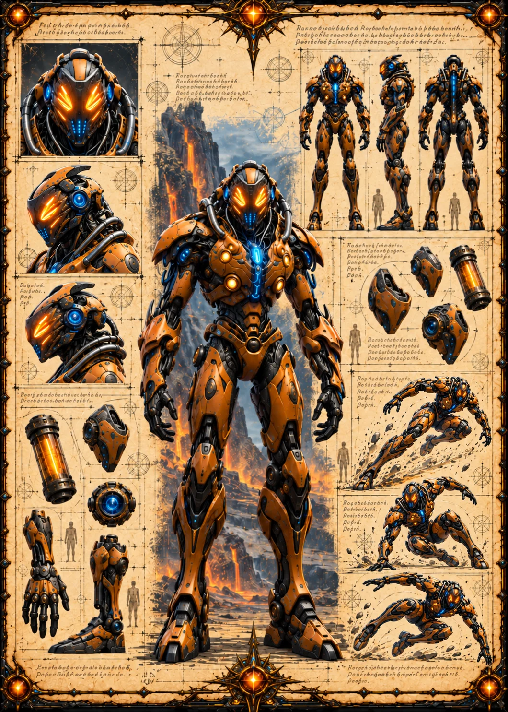

Field Observation
A towering lava-bright rift splits the dark rock left of the hero.
 ©
©
GENEZYS ARCHIVE · EARTH 1 · Synthbot
Blight Spotter
Identity & combat record
Archive node 01 / 05
Archive record
Zwet surveys the battlefield and spreads sickness with a single glance. The Pandemic Gaze wears every enemy down, slowly, for three rounds. To the Primal Horde, all of Earth 1 is simply a field waiting for the Spore.
Combat signature
Surveys field and spreads sickness everywhere: Deals 10 damage and 10 Cosmara damage to all enemies for 3 rounds.
Genezys 10:03 ™&©2026LEGIONS
Recovered visual record
Archive node 02 / 05
Full frame available // rotate device to landscape
Technical archive
Archive node 03 / 05

Classified field intelligence
Archive node 04 / 05
FIELD REPORT // RIFT REPORT
Field Observation
A towering lava-bright rift splits the dark rock left of the hero.
Environment
Object Analysis
Key Findings
Motion archive
Archive node 05 / 05
Motion record not yet recovered